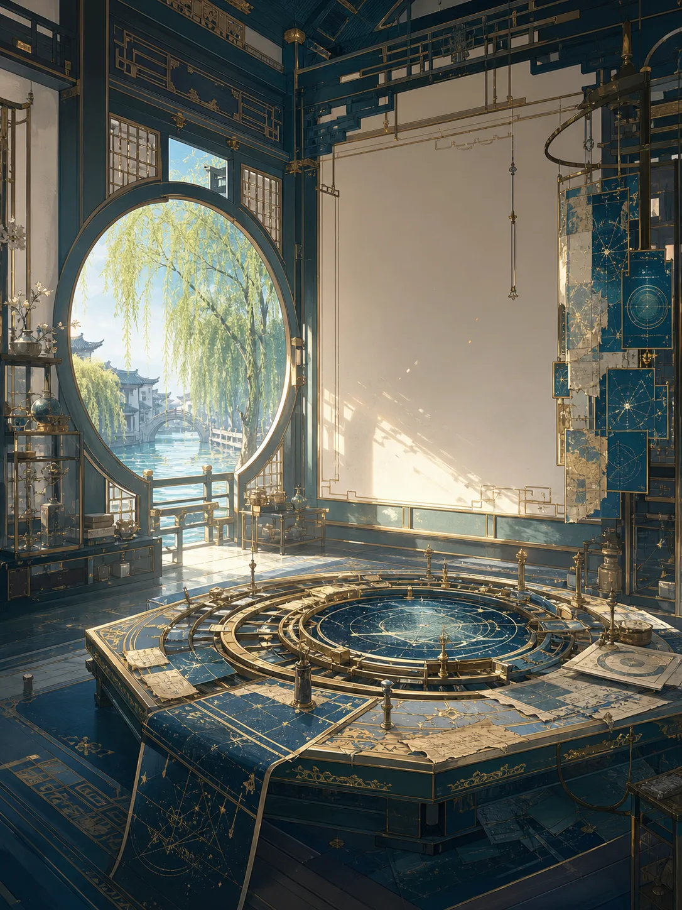
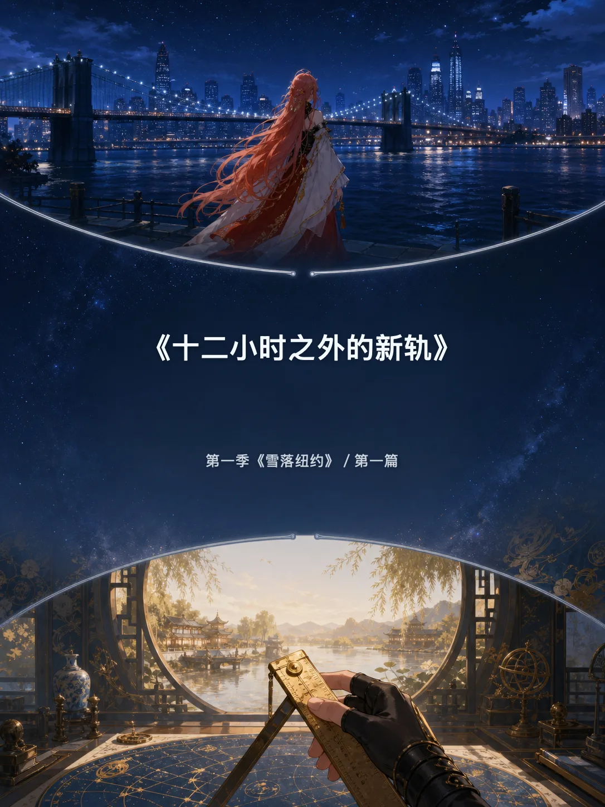
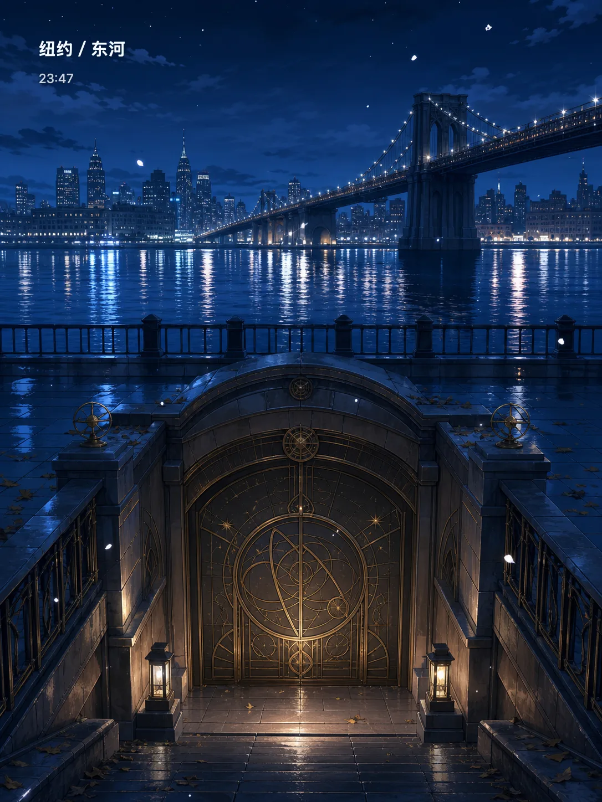
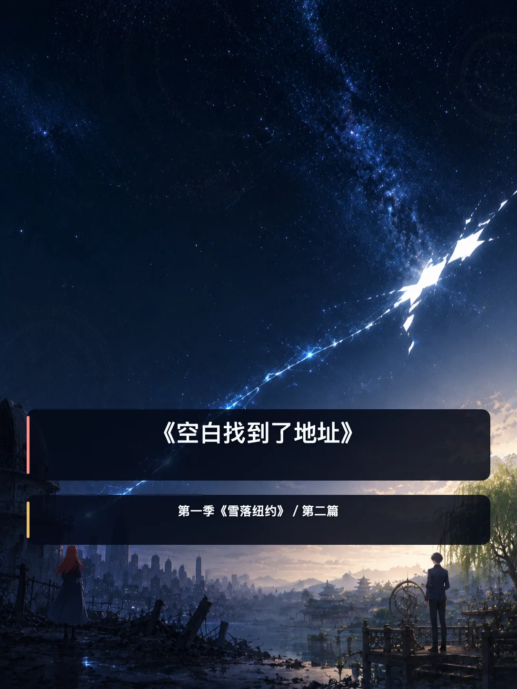
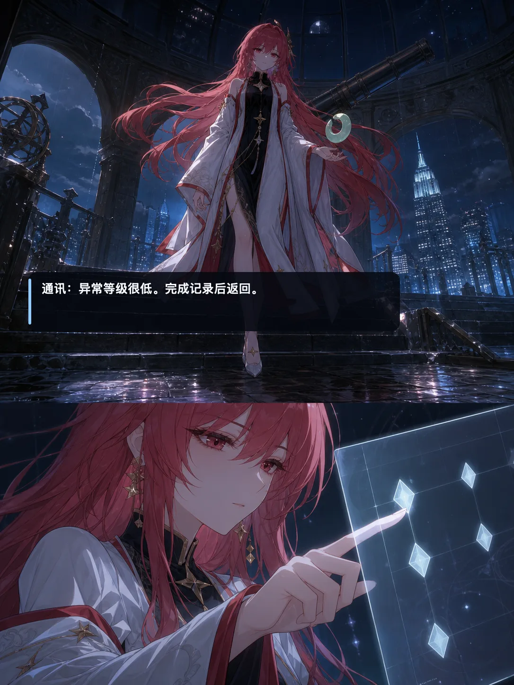
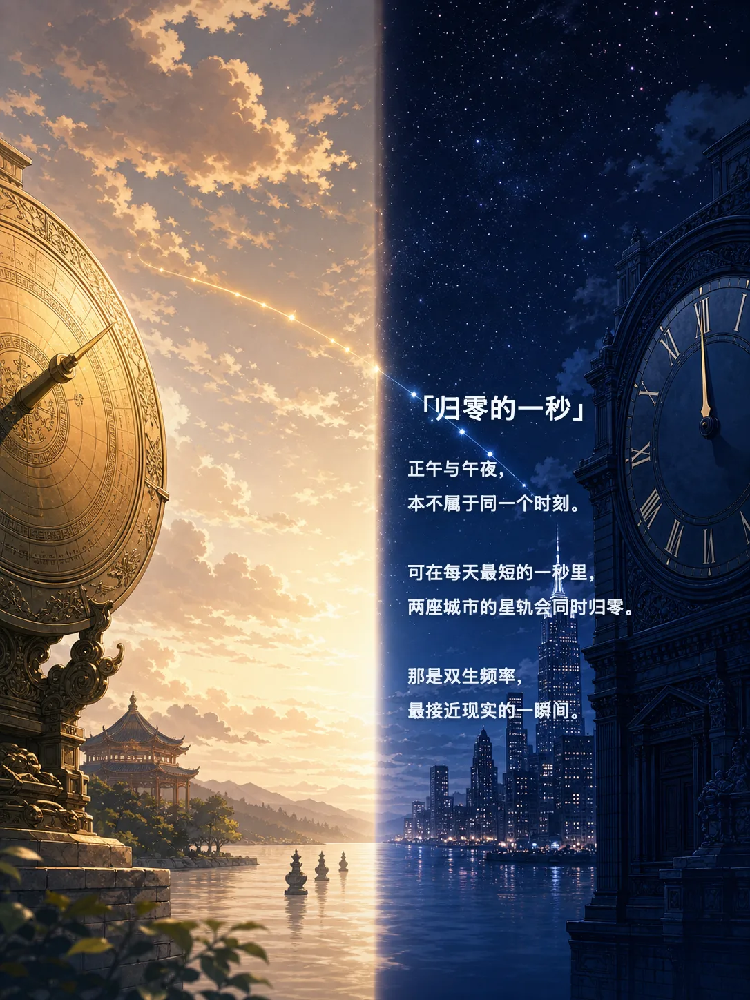
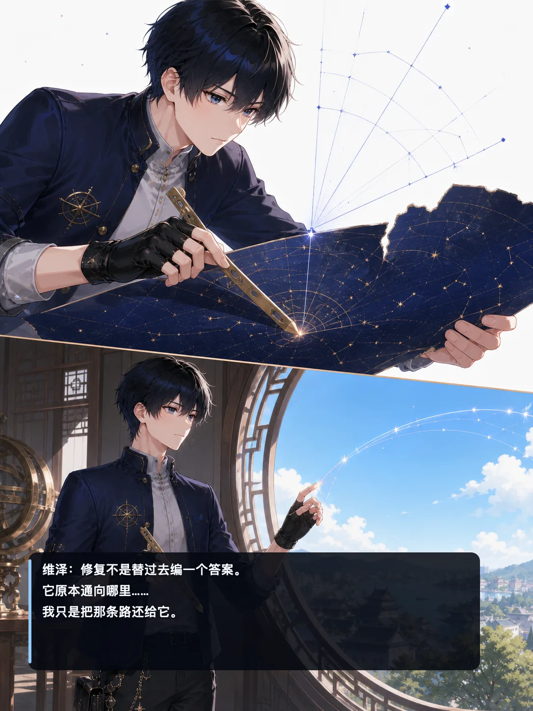
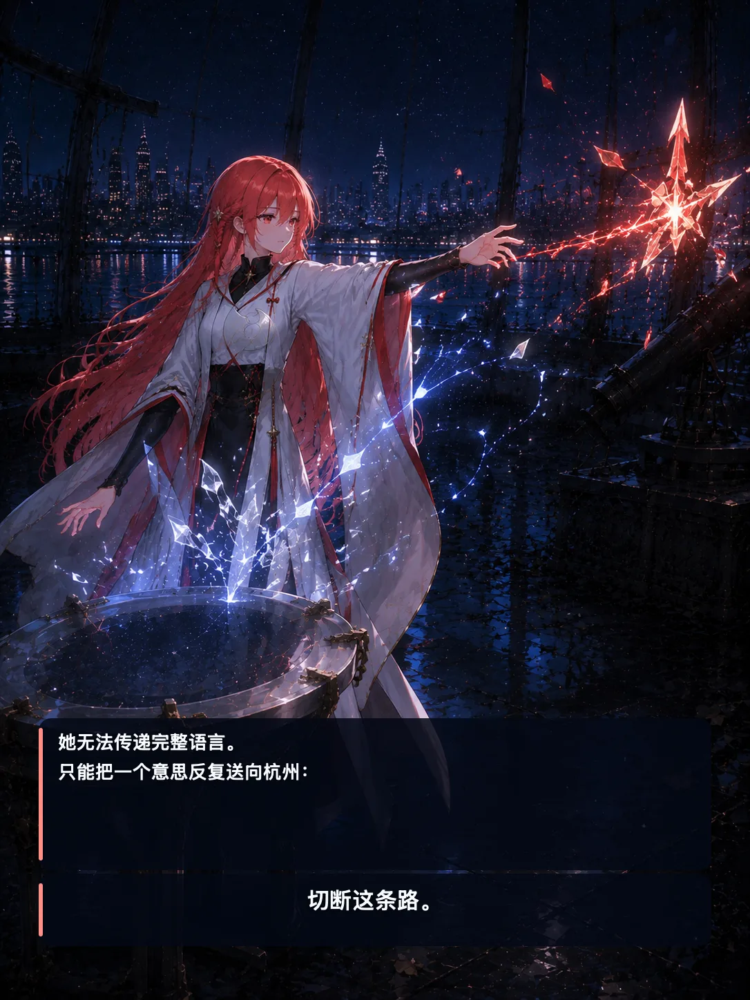
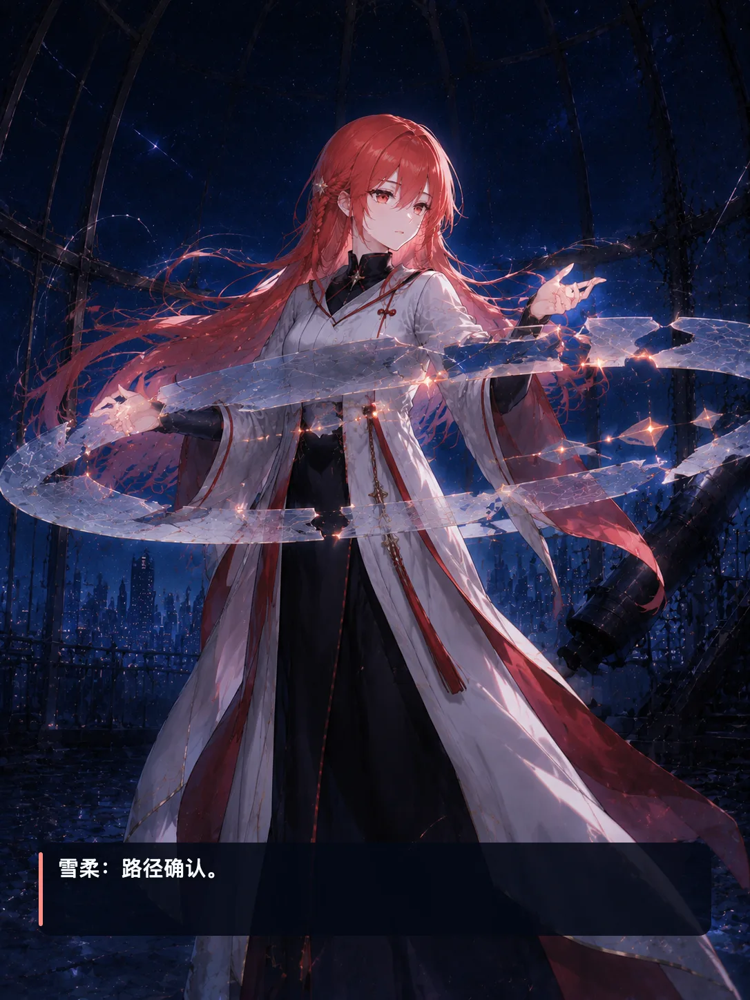
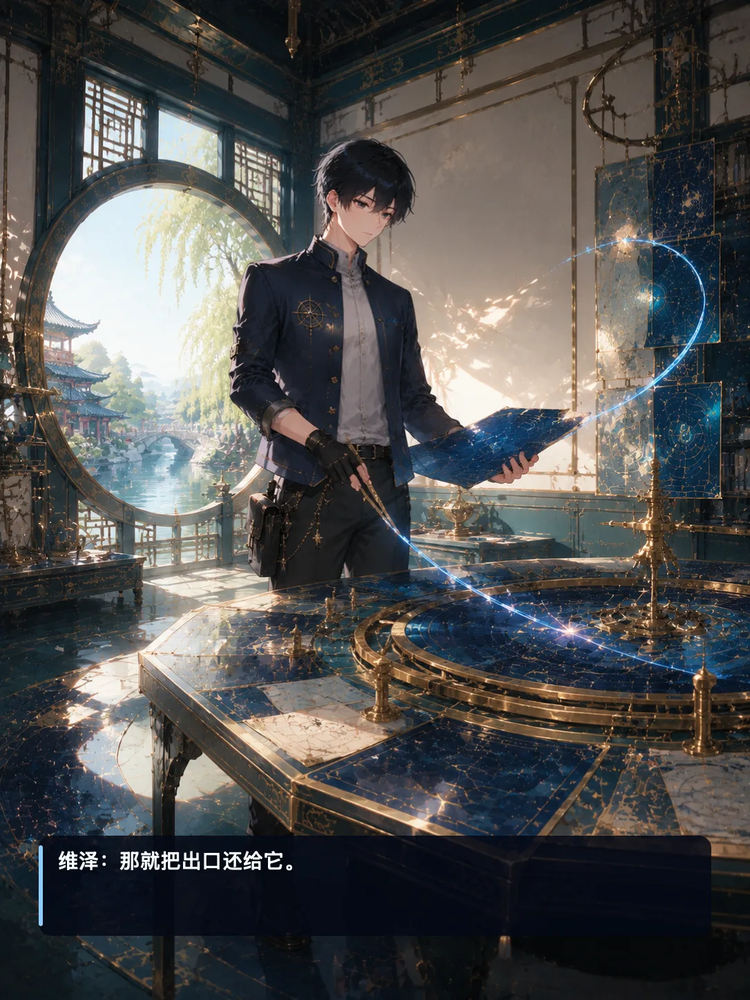

HANGZHOU · 11:47
栖星馆
纸张纤维、旧黄铜与临水天光。维泽在这里修复一条本不该存在的线。
命运让他们听见彼此。
选择决定他们是否回答。
杭州正午，纽约午夜。一个修复被抹去的道路，一个记录真实存在过的痕迹——他们尚未相见，却在世界归零的一秒里，共同留下了第一条新轨。

01 WORLD / 世界档案

纸张纤维、旧黄铜与临水天光。维泽在这里修复一条本不该存在的线。

东河之下，冷夜与潮声重叠。雪柔把即将消失的真实，保存成一枚星晶。
它不预告未来，只记录生命独有的频率。
听见不是答案，主动回应才是道路的开始。
一条不属于既有序列、只能由两人共同完成的轨道。
02 CHAPTERS / 篇章轨道
一段没有名字、没有内容、也没有地址的信号，在十二小时之外敲了一百二十七次。
开启阅读
维泽给一条不存在的路找到了地址，也让追逐真实痕迹的空白潮找到了入口。
开启阅读03 MOMENTS / 星轨切片






04 RESONATORS / 人物共鸣
THE KEEPER OF TRACES
“它不是被遗失了。是世界正在忘记，它曾经属于谁。”
THE RESTORER OF PATHS
“修复不是替过去编一个答案。我只是把那条路还给它。”
TRANSMISSION RECEIVED · 00